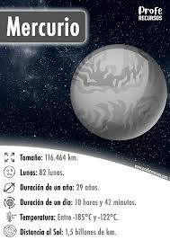

Mercurio es un planeta sólido y rocoso, es el planeta más cercano al Sol y es también el más pequeño de todos los planetas del Sistema Solar. Es sólo un poco más grande que la Luna, el satélite natural de la Tierra, ambos cuerpos celestes se caracterizan por tener una superficie cubierta de cráteres.
